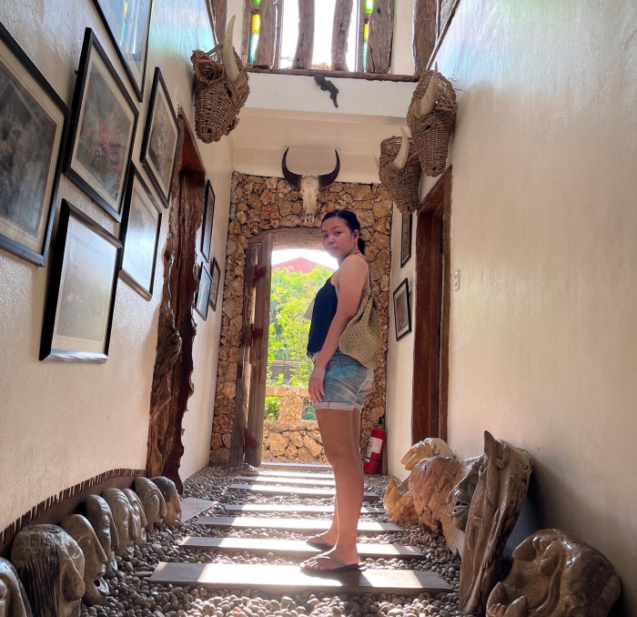

Hi! I'm Cassandra Dumpit
Frontend Web Developer | Your Partner in IT

Frontend Web Developer | Traveller | Movie enthusiast
I'm currently finishing my degree in National University-Manila pursuing BS-Information Technology. In my free time, I love to travel and explore different culture. I also catch up to my favorite TV series and watch movies that feeds my curious mind.
ReactJS
Tailwind CSS
SASS
Bootstrap
Where I've Worked
Education Network Philippines
Website Technical Support | Nov 2022 - Feb 2023
- Responded to technical issues by troubleshooting website navigation and functionality problems to ensure an optimal customer experience
- Worked with the company's research team to upload required resources, including research studies, press statements, reports, and media such as recorded webinar videos
- Collaborated with the company's research team to upload essential resources, including research studies, press statements, reports, and media, such as recorded webinar videos.
- Collaborated with the company's research team to upload essential resources, including research studies, press statements, reports, and media, such as recorded webinar videos.
- Managed technical aspects of the company website by performing regular maintenance, including updating content, adding new features, and troubleshooting errors to enhance website functionality and user experience.
The Northern Office
Freelance Web Developer | Feb 2023
- Addressed website functionality inquiries from clients by implementing updates to website pages, adding new features, and improving content to ensure a seamless user experience
- Performed comprehensive quality assurance testing on the website to ensure optimal compatibility with all devices and browsers.
- Maintained the highest standards of technical performance to enhance the user experience
Education
National University-Manila
2020-Present
Dean's Lister- Bachelor of Science in Information Technology: Mobile and Web Applications